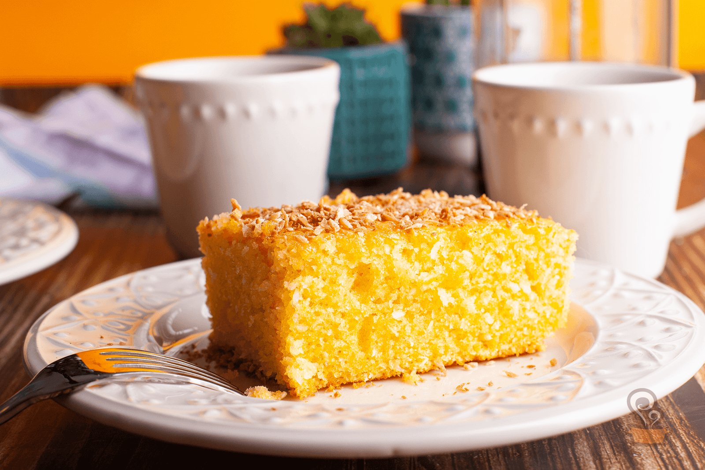

Doces · Tortas e bolos
Bolo de fubá e coco

Ingredientes
- 1 xícara de açúcar
- ½ xícara de manteiga ou margarina
- 3 gemas
- 1 vidro pequeno (200 ml) de leite de coco
- 1 xícara de leite
- 1 xícara de fubá
- 1 pacote pequeno (50 g) de coco ralado
- ½ xícara de farinha de trigo
- 1 colher (sopa) de fermento em pó
- 3 claras em neve firme
- 2 colheres (sopa) de açúcar (cobertura)
Modo de preparo
- Preaqueça forno médio-alto (200 °C). Bata açúcar e manteiga até creme esbranquiçado.
- Junte gemas, metade do leite de coco e todo o leite.
- Acrescente fubá, coco, farinha e fermento.
- Incorpore claras. Despeje em assadeira 20 × 30 cm untada.
- Asse 20 minutos, reduza para 150 °C e asse mais 5 minutos.
- Misture leite de coco restante com açúcar e regue o bolo quente. Esfrie, corte em quadrados e congele.
Observação
Rendimento: 24 porções. Desenforme sobre grade para evitar umidade. Descongelamento: 1 hora.